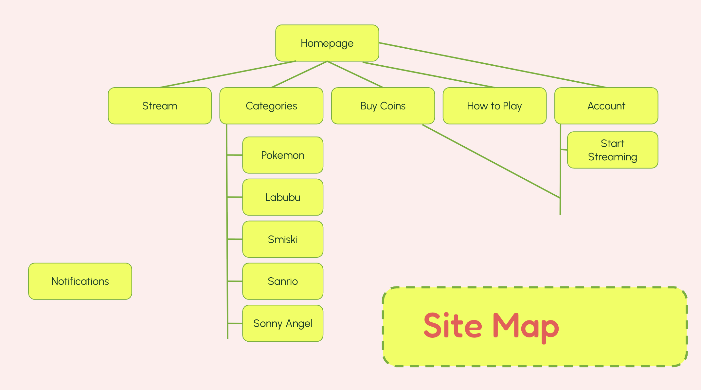

Overview
Introducing Begal, a live-streaming site that enhances thrill but reduces entry barriers, raises the stakes and promotes community.
Research
Betting Ladies
This website serves as a forum and resource hub for the minority of women who gamble. It is very feminine and minimalistic. Women make up roughly 20% of daily online bettors.
Competitive Analysis: Calembou
Pastels, sans serif, rounded borders and elements, sorted by price, collection, and type.
Love Island Betting
According to 19th News, Men dominate prediction market apps, and Kalshi tries to encourage more women to use the platform. Love Island has become a significant part of its engagement strategy. According to a spokesperson from Kalshi, the percentage of women traders on its platform overall has doubled in the past year, and “Love Island” markets specifically have three times more women traders than the platform’s markets on average, with women making up two-thirds of new ”Love Island” traders. Still, men remain the majority of traders on Kalshi overall, mirroring patterns in sports betting more broadly. Kalshi also has a social aspect, allowing traders to comment on specific markets and sometimes even make their case for their chosen couple. Kalshi’s “Survivor” market correctly favored the eventual winner with unusual accuracy months before the pretaped season aired, prompting host Jeff Probst to accuse prediction markets of “incentivizing people to lie, cheat and steal.” Love Island airs on a short delay but is unfolding in real time, carrying a different risk, less about leaked final outcomes and more about real-time access to eliminations or votes before they’re public.
Gambling Psychology
I created personas for casual collectors, daily grinders, and competitive-minded players. Each persona helped frame how different users would value features like streamlined pack opening, limited-time tournaments, and better long-term goals between expansions.
Live Streaming: Twitch
Twitch is a live-streaming and entertainment platform (web and app) that allows content creators to interact with fans in real time, while playing games, chatting or doing activities. This fosters a sense of community and heightens the suspense. The navigation is simple searchbar and the sidebar of the top streamers live now. It is mostly grids of video thumbnails featuring streams live currently.
Design
Mockups
Storyboards mapped how a player might move from opening the app to claiming rewards, joining an event, and opening packs. This helped identify moments where the current experience loses momentum and where a more satisfying loop could be introduced.
Sketching/Lo-fi Prototyping
Low-fidelity sketches explored simpler layouts for the home screen, missions, and event entry points. My design iterations focused on reducing unnecessary screens and making key actions feel faster. Early concepts explored condensed menu paths, clearer event access points, and more visible mission progress so players could immediately see what to do next.
Information Architecture
I reorganized the information architecture around the actions players care about most: collecting, battling, completing missions, and participating in events. Grouping these functions more clearly supports faster decision-making and less menu fatigue.

Interactive Prototypes
Interactive prototypes tested shortened user flows for daily play, event discovery, and special pack options. These prototypes made it easier to evaluate whether the redesigned experience felt more rewarding and easier to navigate than the current version.
Evaluate
Usability Testing
Usability testing focused on how quickly players could find events, understand missions, and complete repeat actions. Test participants generally responded well to the reduced number of screens and the clearer placement of progression-related features.
User Feedback
Feedback suggested that players were most excited by features that added purpose between expansion releases. Tournament support, better rewards, and more meaningful daily engagement were seen as the strongest improvements to the overall concept.
Questionnaires
Post-test questionnaires measured perceived clarity, satisfaction, and ease of use. Responses showed that participants understood the redesigned structure more quickly and felt the updated progression loop gave them more reasons to keep returning.
SUS Score
The SUS score was used to gauge overall usability across the prototype experience. While this project is conceptual, the scoring framework helped validate that simplifying navigation and strengthening rewards would likely improve player satisfaction.
Outcome
Expert Interview
Insights from expert perspectives reinforced the need for a stronger live-service strategy in PTCGP. Their feedback supported the direction of combining accessibility for casual players with more structure for dedicated and competitive users.
Competitive Analysis
The competitive review showed that PTCGP has room to stand out by improving retention rather than simply adding more content. Better event cadence, more desirable rewards, and fewer interface barriers could make the experience feel far more complete.
Projected Results
If implemented, these changes could increase daily engagement, improve player satisfaction, and create stronger motivation to spend on premium options without making the game feel unfair. The concept aims to balance monetization, usability, and long-term retention.
Reflection
I succeeded in making a high fidelity prototype that mimicked my initial sketches and mockups. The branding reflects the bright and playful nature of blind boxes and excels at being oriented for female betters who don’t have many sites created for them..
Future Potential
I want to add more community-based, interactive features like adding friends to join a stream, or a referral program, or some type of event system.